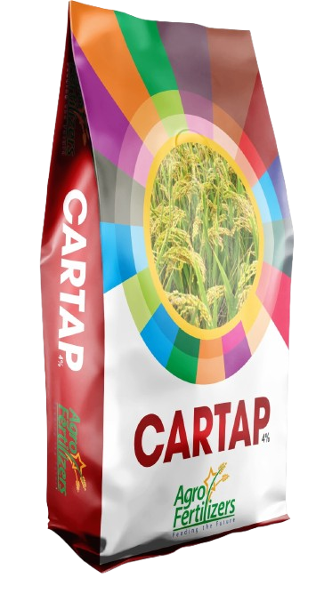
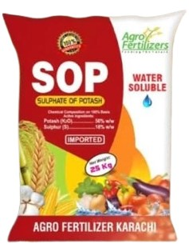
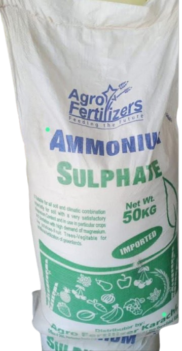

AGRO FERTILIZERS KARACHI
Company Profile:
Agro Fertilizers Karachi Company Bio Established in 2021,
Agro Fertilizers Karachi is a trusted provider of high-quality agricultural
inputs across Sindh.We specialize in supplying premium-grade fertilizers
designed to maximize crop yields and improve soil health. By bridging
the gap between advanced agricultural science and practical farming,
we empower both local dealers and farmers with dependable, result-driven solutions.
Our commitment to efficacy ensures that every product delivers visible,
outstanding performance in the field.
Corporate Overview:
Company Name: Agro Fertilizers Karachi
Established Year: 2019
Headquarters: Karachi, Sindh, Pakistan
Core Business: Premium Fertilizer Distribution & Supply
Target Market: Agricultural Dealers and Farmers
Geographic Coverage: Regional (All Districts of Sindh)
Strategic Pillars:
Uncompromised Quality: Every product batch undergoes strict quality checks to
meet high standard specifications.
Proven Field Efficacy: Our fertilizers are formulated to deliver visible, high-yield
results across diverse field crops.
Dealer & Farmer Support: We maintain strong supply chains to support retail partners
and local farming communities alike.To help tailor this profile further, tell me if you
want to add specific product names, company contact details, or a mission statement.
| S.No | Product | Packing | Rate | Picture | link |
|---|---|---|---|---|---|
| 1 | Nitrophos | 50 Kg | Rs.5000 | |
NITROPHOS |
| 2 | Cartap | 9 kg | Rs.1200 |  |
CARTAP |
| 3 | S.O.P | 25 kg | Rs.5500 |  |
S.O.P |
| 4 | A.Sulphate | Packing | Rate |  |
Link |